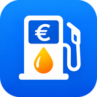

L'application
CarbuPrix compare les stations-service autour de vous et n'affiche que celles qui sont soit moins chères, soit plus proches que les autres : plus on s'éloigne, plus le prix doit baisser pour que la station mérite le détour. Les prix viennent des données officielles de la France, de l'Espagne et du Portugal. Vous choisissez votre carburant, votre position (ou une adresse sur la carte), puis ouvrez la station dans votre application de cartes.
Ce que vous y trouverez
- Deux vues : la moins chère ou la plus proche
- Tous les carburants : gazole, essences SP95/SP98, E85, GPL, GNC, hydrogène, AdBlue…
- Horaires d'ouverture, stations fermées masquées ou affichées selon vos réglages
- Position de l'appareil ou adresse choisie sur la carte
- Thème clair ou sombre, palette de couleurs au choix
- Une application libre (AGPL-3.0), adaptée à partir de Carburoid
En détail
- Version
- 1.6.5
- Taille
- 35,6 Mo
- Android
- à partir de 8.0
- Mise à jour
- 1 novembre 2026
Catégorie : Outils · Gratuit · Sans publicité
Autorisations demandées
- Connaître votre position approximative
- Connaître votre position précise
- Voir l'état de la connexion réseau
- Voir l'état de la connexion Wi-Fi
- Accéder à Internet
Ce qu'il faut savoir
- Elle demande l'accès à votre position (précise ou approximative) pour classer les stations selon la distance. Vous pouvez aussi saisir une adresse à la place.
- Les prix sont téléchargés depuis les sites officiels des données publiques. Pour la France, les noms des stations et les horaires ne sont pas encore tous disponibles : l'application l'indique.
- Pour fonctionner, elle contacte des services publics ouverts : OpenStreetMap (recherche d'adresse), OpenFreeMap (fond de carte) et OSRM (distances par la route). Ces services peuvent recevoir votre position ou l'adresse choisie.
- Aucune publicité. En cas de plantage, le rapport d'erreur reste sur votre téléphone : c'est vous qui choisissez de le copier, l'enregistrer ou l'envoyer.
- Logiciel libre (licence AGPL-3.0), adapté à partir de Carburoid : le code source est accessible, voir la fiche de l'application.
Logiciel libre
Cette version est une adaptation modifiée de Carburoid, de David García Garzón. Elle reste diffusée sous licence AGPL-3.0 : vous pouvez consulter, étudier et réutiliser son code.
Code source d'origine (Carburoid) · Demander le code source de cette version
Comment installer CarbuPrix sur Android ?
- Ouvrez cette page depuis votre téléphone et touchez Télécharger.
- Ouvrez le fichier téléchargé (notification, ou dossier Téléchargements).
- Si Android le demande, autorisez votre navigateur à installer des applications inconnues, puis touchez Installer.
Ces applications ne passent pas par le Play Store : Android ou Play Protect peut afficher un avertissement. Si vous avez téléchargé le fichier depuis cette page, vous pouvez poursuivre l'installation.